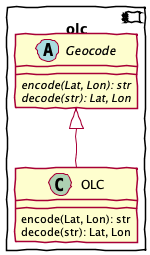

olc – OLC Geocoding¶
This is one of many Geocoding schemes that permits simplistic proximity checks.
See https://github.com/google/open-location-code/blob/main/docs/specification.md
This document has a few tiny gaps.
The “Encoding” section omits details on clipping and normalization.
The “Decoding” section implies that the decoded value is a box that brackets the original coordinations. This menas that enoding and decoding aren’t proper inverses, exception in a few special cases.
The topic of “precision” is noted without explaining how it is used when decoding. The replacement of “00” padding characters, and the creation of a bounding box are not really described very carefully.
See the official Test Cases: https://github.com/google/open-location-code/blob/main/test_data
To compare proximate waypoints, we can translate Lat/Lon to OLC (Open Location Code.) OLC comparisons provide a very handy proximity test.
Code length |
Precision in degrees |
Precision |
2 |
20 |
2226 km |
4 |
1 |
111.321 km, 60 nmi |
6 |
1/20 |
5566 meters, 3 nmi |
8 |
1/400 |
278 meters, .15 nmi |
10 |
1/8000 |
13.9 meters, 45 feet |
Further geocode details can narrow the space to spaces 2.8 x 3.5 meters (or even smaller.)
Encoding¶
The encoding algorithm has the following outline:
Clip latitude to -90 - +90. This includes a special case for excluding +90: back off based on how many digits are going to be encoded.
Normalize longitude to -180 to +180 (excluding +180)
Convert lat and lon to N latitude and E longitude via offsets to remove signs.
Encode in base 20.
Interleave 5 pairs of digits from latitude and longitude for the most significant portion.
Convert pairs of digits into a single base 20 number for least significant portion.
Truncate (or zero pad) given the the size parameter.
Inject the “+” after position 8.
This is a rectangle, not a point. That means there’s an implied box around the given point. This concept of describing a box with a size implied by the number of digits informs decoding.
Decoding¶
TBD.
Implementation¶
Here’s the UML overview of this module.

Abstract Superclass¶
Concrete Subclass¶
Encode an OLC string from a lat, lon pair.
The latitude number must be clipped to be in the range -90 to 90. The longitude number must be normalised to be in the range -180 to 180.
>>> OLC().encode(20.3701135, 2.78223535156, size=13) '7FG49QCJ+2VXGJ'
- Parameters
lat – latitude, signed
lon – longitude, signed
size – limit of detail, usually 10 or 11, but be up to 15.
- Returns
OLC string
Decode a lat, lon pair from an OLC string.
An OLC has several forms, punctuated by an “+” that signals the end of the leading 8 characters.
AOAOAOAO: no plus. Assume “+00” suffix to fill up to a 10-digit MSB-only form.AOAOAOAO+AO: the expected 10-digit MSB-only form.AOAOAOAO+AOVWYXZ: after the 10-digits, an LSB suffix of 1 to 5 additional digits.AOAO0000zeros used as place-holders to fill out the MSB section.AOAO+leading positions can be assumed based on other context. We don’t handle this.
Note that the encoded value is allowed to pad with zeroes, which are not otherwise valid. These are – in effect – wild-card matching values. We can replace them with “2” which is not as obviously a wild-card.
The reference implementation decodes an OLC to define a bounding box; not a single point. We don’t implement this completely. Four test cases do not pass with this implementation.
- Parameters
olc – OLC string
size – not used, but can truncate long over-specified strings Can also be used to define the size of the bounding box in the LSB suffix.
- Returns
lat, lon pair
Base 20/Base 5 Conversions¶
There are subtle bugs in the from20() conversion.
It doesn’t pass all the decode tests because it
doesn’t – correctly – include the size of the bounding
box for the LSB of the OLC value.
Decompose a positive Lat or Lon value to a sequence of 5 base-20 values followed by 5 base-4 or base-5 values.
See https://github.com/google/open-location-code/blob/main/docs/specification.md#encoding
>>> list(base20(1.286785+90, lsb=5)) [4, 11, 5, 14, 14, 1, 2, 0, 0, 0] >>> list(base20(103.854503+180, lsb=4)) [14, 3, 17, 1, 16, 0, 0, 1, 2, 0]
From 20.3701135,2.78223535156,13,7FG49QCJ+2VXGJ The last 3, XGJ, are combinations of base 5, base 4 pairs. X = (4, 3), G = (2, 2), J = (3, 0)
“7G9C2645”
>>> list(base20(20.3701135+90, lsb=5)) [5, 10, 7, 8, 0, 4, 2, 3, 2, 2]
“F4QJV642”
>>> list(base20(2.78223535156+180, lsb=4)) [9, 2, 15, 12, 17, 3, 2, 0, 1, 3]
Convert a sequence of 10 digits, 5 in the msb base and 5 in the lsb base, into a float value.
>>> from math import isclose >>> nlat_i = from20([4, 11, 5, 14, 14, 1, 1, 4, 4, 4]) >>> isclose(nlat_i, 91.286785, rel_tol=1E-6) True
>>> elon_i = from20([14, 3, 17, 1, 16, 0, 0, 1, 2, 0], lsb=4) >>> isclose(elon_i, 283.854503, rel_tol=1E-5) True